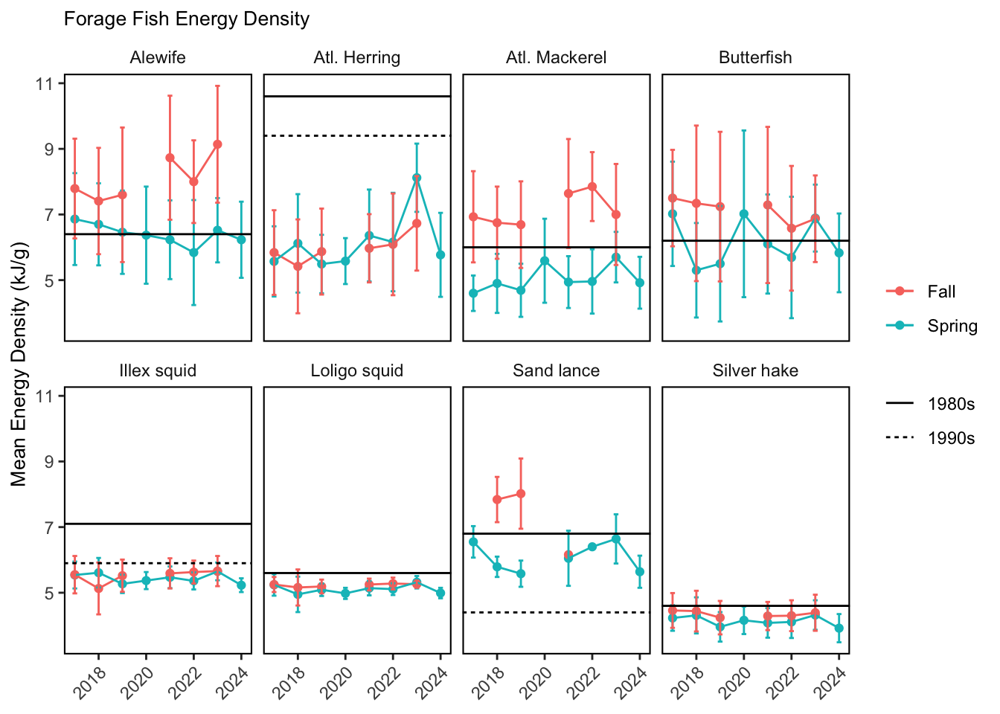

SMART Indicator Report: Forage Fish Energy Density
2 Indicator name
Forage Fish Energy Density
Includes variable(s): Alewife/Fall/Energy.Density_Mean, Alewife/Fall/Energy.Density_SD, Alewife/Fall/N, Alewife/Spring/Energy.Density_Mean, Alewife/Spring/Energy.Density_SD, Alewife/Spring/N, Atl. Herring/Fall/Energy.Density_Mean, Atl. Herring/Fall/Energy.Density_SD, Atl. Herring/Fall/N, Atl. Herring/Spring/Energy.Density_Mean, Atl. Herring/Spring/Energy.Density_SD, Atl. Herring/Spring/N, Atl. Mackerel/Fall/Energy.Density_Mean, Atl. Mackerel/Fall/Energy.Density_SD, Atl. Mackerel/Fall/N, Atl. Mackerel/Spring/Energy.Density_Mean, Atl. Mackerel/Spring/Energy.Density_SD, Atl. Mackerel/Spring/N, Butterfish/Fall/Energy.Density_Mean, Butterfish/Fall/Energy.Density_SD, Butterfish/Fall/N, Butterfish/Spring/Energy.Density_Mean, Butterfish/Spring/Energy.Density_SD, Butterfish/Spring/N, Illex squid/Fall/Energy.Density_Mean, Illex squid/Fall/Energy.Density_SD, Illex squid/Fall/N, Illex squid/Spring/Energy.Density_Mean, Illex squid/Spring/Energy.Density_SD, Illex squid/Spring/N, Loligo squid/Fall/Energy.Density_Mean, Loligo squid/Fall/Energy.Density_SD, Loligo squid/Fall/N, Loligo squid/Spring/Energy.Density_Mean, Loligo squid/Spring/Energy.Density_SD, Loligo squid/Spring/N, Sand lance/Fall/Energy.Density_Mean, Sand lance/Fall/Energy.Density_SD, Sand lance/Fall/N, Sand lance/Spring/Energy.Density_Mean, Sand lance/Spring/Energy.Density_SD, Sand lance/Spring/N, Silver hake/Fall/Energy.Density_Mean, Silver hake/Fall/Energy.Density_SD, Silver hake/Fall/N, Silver hake/Spring/Energy.Density_Mean, Silver hake/Spring/Energy.Density_SD, Silver hake/Spring/N
3 Indicator brief description
Energy density of alewife, butterfish, sand lance, and Atlantic mackerel varies seasonally, with seasonal estimates both higher and lower than estimates from previous decades. The data presented are the seasonal (Spring and Fall) energy density (kJ/g) for eight important forage species; Alewife, Atlantic Herring, Silver Hake, Northern Sand Lance, Atlantic Mackerel, Butterfish, Northern Shortfin Squid, and Inshore Longfin Squid. Samples are obtained from the NEFSC seasonal bottom trawl surveys and processed in the lab to estimate energy content.
4 Indicator visualization
Variables plotted are the mean energy density (kJ/g) for eight species across seasons and years. The reference lines represent estimates from prior studies where available for comparison. The energy content of Atlantic herring from the NEFSC trawl surveys has increased to over 7 kJ/g wet weight in spring 2023, but is still well below that observed in the 1980s and 1990s (10.6-9.4 kJ/ g wet weight). Silver hake, longfin squid (Loligo in figure) and shortfin squid (Illex in figure) remain lower than previous estimates [44,45]. Energy density of alewife, butterfish, sand lance, and Atlantic mackerel varies seasonally, with seasonal estimates both higher and lower than estimates from previous decades.

5 Indicator documentation
5.1 Are indicators available for others to use (data downloadable)?
Yes
5.1.1 Where can indicators be found?
Data: https://noaa-edab.github.io/ecodata/index.html
Description: https://noaa-edab.github.io/catalog/energy_density.html
Technical documentation: https://noaa-edab.github.io/tech-doc/energy_density.html
5.1.2 How often are they updated? Are future updates likely?
[need sequential look at datasets for update frequency. Future requires judgement]
5.1.3 Who is the contact?
Mark Wuenschel (mark.wuenschel@noaa.gov)
5.2 Gather indicator statistics
5.2.1 Units
Indicator | Units |
|---|---|
Alewife/Fall/Energy.Density_Mean | no Units field |
Alewife/Fall/Energy.Density_SD | no Units field |
Alewife/Fall/N | no Units field |
Alewife/Spring/Energy.Density_Mean | no Units field |
Alewife/Spring/Energy.Density_SD | no Units field |
Alewife/Spring/N | no Units field |
Atl. Herring/Fall/Energy.Density_Mean | no Units field |
Atl. Herring/Fall/Energy.Density_SD | no Units field |
Atl. Herring/Fall/N | no Units field |
Atl. Herring/Spring/Energy.Density_Mean | no Units field |
Atl. Herring/Spring/Energy.Density_SD | no Units field |
Atl. Herring/Spring/N | no Units field |
Atl. Mackerel/Fall/Energy.Density_Mean | no Units field |
Atl. Mackerel/Fall/Energy.Density_SD | no Units field |
Atl. Mackerel/Fall/N | no Units field |
Atl. Mackerel/Spring/Energy.Density_Mean | no Units field |
Atl. Mackerel/Spring/Energy.Density_SD | no Units field |
Atl. Mackerel/Spring/N | no Units field |
Butterfish/Fall/Energy.Density_Mean | no Units field |
Butterfish/Fall/Energy.Density_SD | no Units field |
Butterfish/Fall/N | no Units field |
Butterfish/Spring/Energy.Density_Mean | no Units field |
Butterfish/Spring/Energy.Density_SD | no Units field |
Butterfish/Spring/N | no Units field |
Illex squid/Fall/Energy.Density_Mean | no Units field |
Illex squid/Fall/Energy.Density_SD | no Units field |
Illex squid/Fall/N | no Units field |
Illex squid/Spring/Energy.Density_Mean | no Units field |
Illex squid/Spring/Energy.Density_SD | no Units field |
Illex squid/Spring/N | no Units field |
Loligo squid/Fall/Energy.Density_Mean | no Units field |
Loligo squid/Fall/Energy.Density_SD | no Units field |
Loligo squid/Fall/N | no Units field |
Loligo squid/Spring/Energy.Density_Mean | no Units field |
Loligo squid/Spring/Energy.Density_SD | no Units field |
Loligo squid/Spring/N | no Units field |
Sand lance/Fall/Energy.Density_Mean | no Units field |
Sand lance/Fall/Energy.Density_SD | no Units field |
Sand lance/Fall/N | no Units field |
Sand lance/Spring/Energy.Density_Mean | no Units field |
Sand lance/Spring/Energy.Density_SD | no Units field |
Sand lance/Spring/N | no Units field |
Silver hake/Fall/Energy.Density_Mean | no Units field |
Silver hake/Fall/Energy.Density_SD | no Units field |
Silver hake/Fall/N | no Units field |
Silver hake/Spring/Energy.Density_Mean | no Units field |
Silver hake/Spring/Energy.Density_SD | no Units field |
Silver hake/Spring/N | no Units field |
5.2.2 Length of time series, start and end date, periodicity
General overview: Spring and Fall Bottom Trawl Survey
Indicator specifics:
Indicator | EPU | StartYear | EndYear | NumYears | MissingYears |
|---|---|---|---|---|---|
Alewife/Fall/Energy.Density_Mean | NA | 2017 | 2023 | 6 | 1 |
Alewife/Fall/Energy.Density_SD | NA | 2017 | 2023 | 6 | 1 |
Alewife/Fall/N | NA | 2017 | 2023 | 6 | 1 |
Alewife/Spring/Energy.Density_Mean | NA | 2017 | 2024 | 8 | 0 |
Alewife/Spring/Energy.Density_SD | NA | 2017 | 2024 | 8 | 0 |
Alewife/Spring/N | NA | 2017 | 2024 | 8 | 0 |
Atl. Herring/Fall/Energy.Density_Mean | NA | 2017 | 2023 | 6 | 1 |
Atl. Herring/Fall/Energy.Density_SD | NA | 2017 | 2023 | 6 | 1 |
Atl. Herring/Fall/N | NA | 2017 | 2023 | 6 | 1 |
Atl. Herring/Spring/Energy.Density_Mean | NA | 2017 | 2024 | 8 | 0 |
Atl. Herring/Spring/Energy.Density_SD | NA | 2017 | 2024 | 8 | 0 |
Atl. Herring/Spring/N | NA | 2017 | 2024 | 8 | 0 |
Atl. Mackerel/Fall/Energy.Density_Mean | NA | 2017 | 2023 | 6 | 1 |
Atl. Mackerel/Fall/Energy.Density_SD | NA | 2017 | 2023 | 6 | 1 |
Atl. Mackerel/Fall/N | NA | 2017 | 2023 | 6 | 1 |
Atl. Mackerel/Spring/Energy.Density_Mean | NA | 2017 | 2024 | 8 | 0 |
Atl. Mackerel/Spring/Energy.Density_SD | NA | 2017 | 2024 | 8 | 0 |
Atl. Mackerel/Spring/N | NA | 2017 | 2024 | 8 | 0 |
Butterfish/Fall/Energy.Density_Mean | NA | 2017 | 2023 | 6 | 1 |
Butterfish/Fall/Energy.Density_SD | NA | 2017 | 2023 | 6 | 1 |
Butterfish/Fall/N | NA | 2017 | 2023 | 6 | 1 |
Butterfish/Spring/Energy.Density_Mean | NA | 2017 | 2024 | 8 | 0 |
Butterfish/Spring/Energy.Density_SD | NA | 2017 | 2024 | 8 | 0 |
Butterfish/Spring/N | NA | 2017 | 2024 | 8 | 0 |
Illex squid/Fall/Energy.Density_Mean | NA | 2017 | 2023 | 6 | 1 |
Illex squid/Fall/Energy.Density_SD | NA | 2017 | 2023 | 6 | 1 |
Illex squid/Fall/N | NA | 2017 | 2023 | 6 | 1 |
Illex squid/Spring/Energy.Density_Mean | NA | 2017 | 2024 | 8 | 0 |
Illex squid/Spring/Energy.Density_SD | NA | 2017 | 2024 | 8 | 0 |
Illex squid/Spring/N | NA | 2017 | 2024 | 8 | 0 |
Loligo squid/Fall/Energy.Density_Mean | NA | 2017 | 2023 | 6 | 1 |
Loligo squid/Fall/Energy.Density_SD | NA | 2017 | 2023 | 6 | 1 |
Loligo squid/Fall/N | NA | 2017 | 2023 | 6 | 1 |
Loligo squid/Spring/Energy.Density_Mean | NA | 2017 | 2024 | 8 | 0 |
Loligo squid/Spring/Energy.Density_SD | NA | 2017 | 2024 | 8 | 0 |
Loligo squid/Spring/N | NA | 2017 | 2024 | 8 | 0 |
Sand lance/Fall/Energy.Density_Mean | NA | 2018 | 2021 | 3 | 1 |
Sand lance/Fall/Energy.Density_SD | NA | 2018 | 2019 | 2 | 0 |
Sand lance/Fall/N | NA | 2018 | 2021 | 3 | 1 |
Sand lance/Spring/Energy.Density_Mean | NA | 2017 | 2024 | 7 | 1 |
Sand lance/Spring/Energy.Density_SD | NA | 2017 | 2024 | 6 | 2 |
Sand lance/Spring/N | NA | 2017 | 2024 | 7 | 1 |
Silver hake/Fall/Energy.Density_Mean | NA | 2017 | 2023 | 6 | 1 |
Silver hake/Fall/Energy.Density_SD | NA | 2017 | 2023 | 6 | 1 |
Silver hake/Fall/N | NA | 2017 | 2023 | 6 | 1 |
Silver hake/Spring/Energy.Density_Mean | NA | 2017 | 2024 | 8 | 0 |
Silver hake/Spring/Energy.Density_SD | NA | 2017 | 2024 | 8 | 0 |
Silver hake/Spring/N | NA | 2017 | 2024 | 8 | 0 |
5.2.3 Spatial location, scale and extent
General overview: Full shelf
Indicator specifics:
Indicator | EPU |
|---|---|
Alewife/Fall/Energy.Density_Mean | NA |
Alewife/Fall/Energy.Density_SD | NA |
Alewife/Fall/N | NA |
Alewife/Spring/Energy.Density_Mean | NA |
Alewife/Spring/Energy.Density_SD | NA |
Alewife/Spring/N | NA |
Atl. Herring/Fall/Energy.Density_Mean | NA |
Atl. Herring/Fall/Energy.Density_SD | NA |
Atl. Herring/Fall/N | NA |
Atl. Herring/Spring/Energy.Density_Mean | NA |
Atl. Herring/Spring/Energy.Density_SD | NA |
Atl. Herring/Spring/N | NA |
Atl. Mackerel/Fall/Energy.Density_Mean | NA |
Atl. Mackerel/Fall/Energy.Density_SD | NA |
Atl. Mackerel/Fall/N | NA |
Atl. Mackerel/Spring/Energy.Density_Mean | NA |
Atl. Mackerel/Spring/Energy.Density_SD | NA |
Atl. Mackerel/Spring/N | NA |
Butterfish/Fall/Energy.Density_Mean | NA |
Butterfish/Fall/Energy.Density_SD | NA |
Butterfish/Fall/N | NA |
Butterfish/Spring/Energy.Density_Mean | NA |
Butterfish/Spring/Energy.Density_SD | NA |
Butterfish/Spring/N | NA |
Illex squid/Fall/Energy.Density_Mean | NA |
Illex squid/Fall/Energy.Density_SD | NA |
Illex squid/Fall/N | NA |
Illex squid/Spring/Energy.Density_Mean | NA |
Illex squid/Spring/Energy.Density_SD | NA |
Illex squid/Spring/N | NA |
Loligo squid/Fall/Energy.Density_Mean | NA |
Loligo squid/Fall/Energy.Density_SD | NA |
Loligo squid/Fall/N | NA |
Loligo squid/Spring/Energy.Density_Mean | NA |
Loligo squid/Spring/Energy.Density_SD | NA |
Loligo squid/Spring/N | NA |
Sand lance/Fall/Energy.Density_Mean | NA |
Sand lance/Fall/Energy.Density_SD | NA |
Sand lance/Fall/N | NA |
Sand lance/Spring/Energy.Density_Mean | NA |
Sand lance/Spring/Energy.Density_SD | NA |
Sand lance/Spring/N | NA |
Silver hake/Fall/Energy.Density_Mean | NA |
Silver hake/Fall/Energy.Density_SD | NA |
Silver hake/Fall/N | NA |
Silver hake/Spring/Energy.Density_Mean | NA |
Silver hake/Spring/Energy.Density_SD | NA |
Silver hake/Spring/N | NA |
5.2.4 Management scale: all species, FMP level, species level, can it be aggregated or separated to different scales?
[Classify by hand, note gridded data if available could be applied to different species ranges]
5.2.5 Uncertainty metrics
Uncertainty is captured in these variables:
[1] “Alewife/Fall/Energy.Density_SD” “Alewife/Spring/Energy.Density_SD” “Atl. Herring/Fall/Energy.Density_SD”
[4] “Atl. Herring/Spring/Energy.Density_SD” “Atl. Mackerel/Fall/Energy.Density_SD” “Atl. Mackerel/Spring/Energy.Density_SD”
[7] “Butterfish/Fall/Energy.Density_SD” “Butterfish/Spring/Energy.Density_SD” “Illex squid/Fall/Energy.Density_SD”
[10] “Illex squid/Spring/Energy.Density_SD” “Loligo squid/Fall/Energy.Density_SD” “Loligo squid/Spring/Energy.Density_SD”
[13] “Sand lance/Fall/Energy.Density_SD” “Sand lance/Spring/Energy.Density_SD” “Silver hake/Fall/Energy.Density_SD”
[16] “Silver hake/Spring/Energy.Density_SD”
5.3 Are methods clearly documented to obtain source data and calculate indicators?
Yes
5.3.1 Can the indicator be calculated from current documentation?
NA
Samples were analyzed for proximate composition and energy density from NEFSC spring and fall bottom trawl surveys. Predictive relationships between the percent dry weight of samples and energy density were developed, and samples collected from current surveys are currently being analyzed for percentage dry weight to enable estimation of energy content (Bean (2020)). The energy density of forage species differed from prior studies in the 1980s and 1990s (Steimle and Terranova (1985), Lawson, Magalhães, and Miller (1998), Table 23.1). Sampling and laboratory analysis is ongoing, with the goal of continuing routine monitoring of energy density of these species.
5.4 Are indicator underlying source data linked or easy to find?
Source data are publicly available.
5.4.2 How/by whom are source data updated? Are future updates likely?
Mark Wuenschel mark.wuenschel@noaa.gov
[likelihood of source data updates requires judgement, enter by hand]
6 Indicator analysis/testing or history of use
6.1 What decision or advice processes are the indicators currently used in?
The energy density of prey indicates the the amount of energy passing from lower trophic levels to higher predators. Changes in ecosystem productivity and/or bioenergetic demands (e.g. metabolic increases due to rising temperature) can impact energy density. Energy density of fishes can vary widely (several fold), particularly for some species that undergo seasonal cycles in energy allocation to reproduction, energy allocation to migration, or seasonal/ontogenetic shifts in energy storage. The value of forage species to higher trophic levels is a function of the their energy density. Forage energy density measurements from NEFSC trawl surveys 2017-2022 are building toward a time series to evaluate trends
6.2 What implications of the indicators are currently listed?
The nutritional content of forage fish changes seasonally in response to ecosystem conditions, with apparent declines in energy density for Atlantic herring and Illex squid relative to the 1980s, but similar energy density for other forage species. It is important to note/caveat that some of the previous estimates of forage fish energy density (from 1980s and 1990s) were based on very small sample sizes (sometimes 4 individuals). Recent work on Atlantic herring (Warren M.S. Thesis, UMASS Dartmouth 2025) shows that herring energy density was higher in summer (in between the spring and fall surveys reported here) and some summer values from 2021-2023 overlap with previous estimates.
6.3 Do target, limit, or threshold values already exist for the indicator?
[Fill by hand; if not in key results or implications, likely does not exist]
6.4 Have the indicators been tested to ensure they respond proportionally to a change in the underlying process?
[Fill by hand; if not in introduction, key results, or implications, likely not tested]
7 Comments
[Fill below by hand once above data complete]
7.1 Additional potential links to management in addition to uses listed above
7.2 What additional work would be needed for the Council to use the indicator?
7.3 What issues are caused if there is a gap or delay in data underlying the indicator